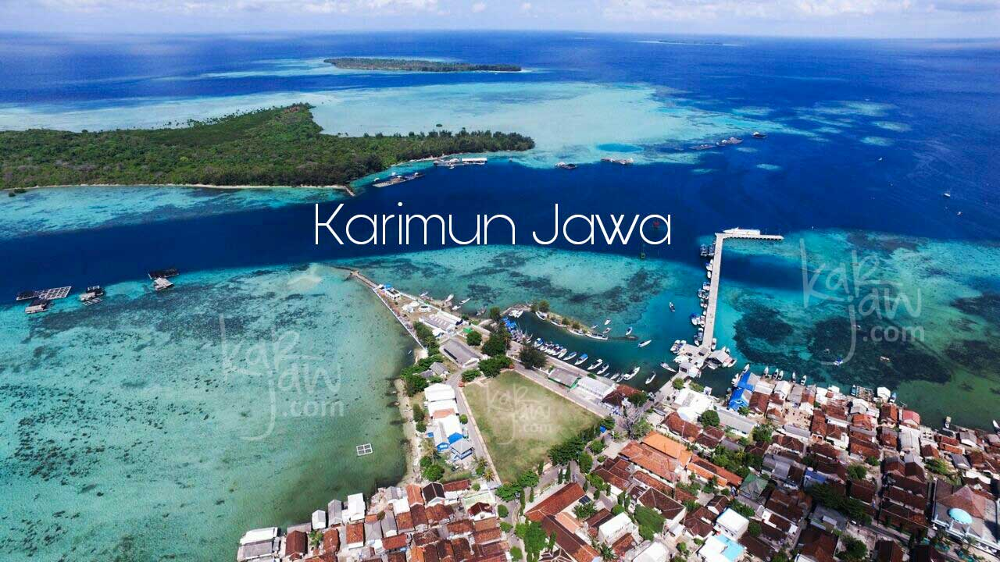

Kepulauan Karimunjawa

Karimunjawa adalah kepulauan di Laut Jawa yang termasuk dalam Kabupaten Jepara, Jawa Tengah. Dengan luas daratan ±1.500 hektare dan perairan ±110.000 hektare, Karimunjawa kini dikembangkan menjadi pesona wisata Taman Laut yang mulai banyak digemari wisatawan lokal maupun mancanegara.
Berdasarkan legenda yang beredar di kepulauan, Pulau Karimunjawa ditemukan oleh Sunan Muria. Legenda itu berkisah tentang Sunan Muria yang prihatin atas kenakalan putranya, Amir Hasan. Dengan maksud mendidik, Sunan Muria kemudian memerintahkan putranya untuk pergi ke sebuah pulau yang nampak "kremun-kremun" (kabur) dari puncak Gunung Muria agar si anak dapat memperdalam dan mengembangkan ilmu agamanya. Karena tampak "kremun-kremun" maka dinamakanlah pulau tersebut Pulau Karimun.